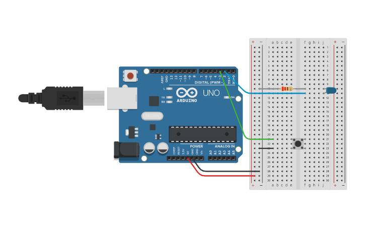

PROJECT 03: BUTTON CONTROL
Introduction to Digital Inputs
Mission Brief
So far, the Arduino has done all the talking (Output). Now it's time for it to listen (Input). In this project, you will add a push button to control the LED manually.
Key Components
- Arduino Uno R3
- Push Button
- 10kΩ Resistor (Pull-down)
- LED & 220Ω Resistor
- Breadboard & Wires
Circuit Diagram

Pin Connections
| Arduino Pin | Component Connection |
|---|---|
| Pin 2 | Button Leg (Signal) |
| Pin 13 | LED Anode (+) |
| 5V | Button Leg (Power) |
| GND | 10kΩ Resistor & LED Cathode |
Step-by-Step Instructions
- Insert the push button into the breadboard.
- Connect one leg of the button to 5V.
- Connect the diagonal/opposite leg to Pin 2.
- Add a 10kΩ resistor from the Pin 2 leg to GND (Pull-down).
- Connect the LED to Pin 13 (Long leg) and GND (Short leg via 220Ω resistor).
- Upload the code below.
Arduino Code
/* Project 3 - Button Control
* Reads a digital input on pin 2 and controls an LED on pin 13.
*/
const int buttonPin = 2; // Pushbutton pin
const int ledPin = 13; // LED pin
int buttonState = 0; // Variable to store reading
void setup() {
pinMode(ledPin, OUTPUT);
pinMode(buttonPin, INPUT);
}
void loop() {
// Read the state of the pushbutton value:
buttonState = digitalRead(buttonPin);
// Check if the pushbutton is pressed.
// If it is, the buttonState is HIGH:
if (buttonState == HIGH) {
digitalWrite(ledPin, HIGH); // Turn LED on
} else {
digitalWrite(ledPin, LOW); // Turn LED off
}
}
How It Works
- Hardware Logic:
-
Digital Input:
Unlike Output (providing voltage), Input measures voltage. We use `digitalRead` to check if a pin sees 5V (HIGH) or 0V (LOW). -
Pull-down Resistor:
The 10kΩ resistor pulls the pin voltage to 0V (GND) when the button is NOT pressed. Without this, the pin acts like an antenna and reads random noise. - Code Logic:
-
If / Else:
This is the most basic decision-making structure. IF the button is pressed (HIGH), do X. ELSE (if released), do Y.
Expected Output
The LED should remain off by default. When you press and hold the button, the LED lights up. When you release the button, the LED turns off immediately.
What You Learned
- How to wire a switch with a pull-down resistor.
- The difference between Digital Input and Output.
- Using
digitalRead()to detect physical interactions.
Next Steps / Extension Ideas
Try modifying the code so the button acts like a "Toggle" switch (press once for ON, press again for OFF). This requires "Debouncing" logic!